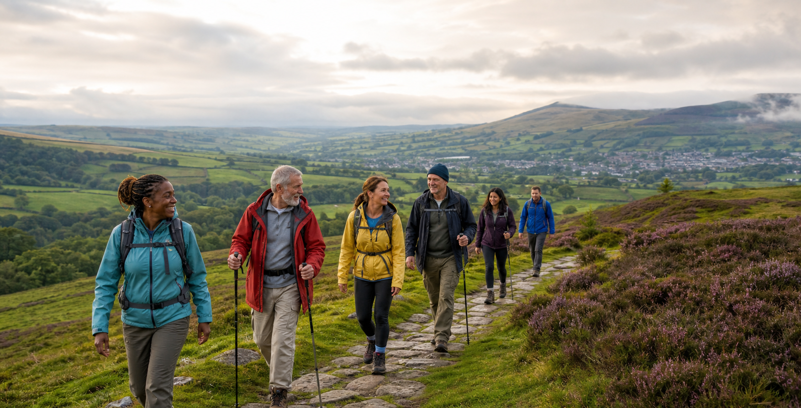

An Odyssey Walk
From Dover to Folkestone Harbour.
- Completed
- Saturday 22nd August 2026
- Distance
- 8 miles
- Meet
- St Pancras Station, 9am

A quiet public walking club in the UK
Small group walks, simple routes, and short journals from every completed day outside.
View next walkWalks
From Dover to Folkestone Harbour.
Journal
Every completed walk leaves a concise note: route, weather, mood, and one remembered moment.
Join
Membership is free. Tell us your name, walking experience, and which walk you would like to join.
awakened.walkers@gmail.com